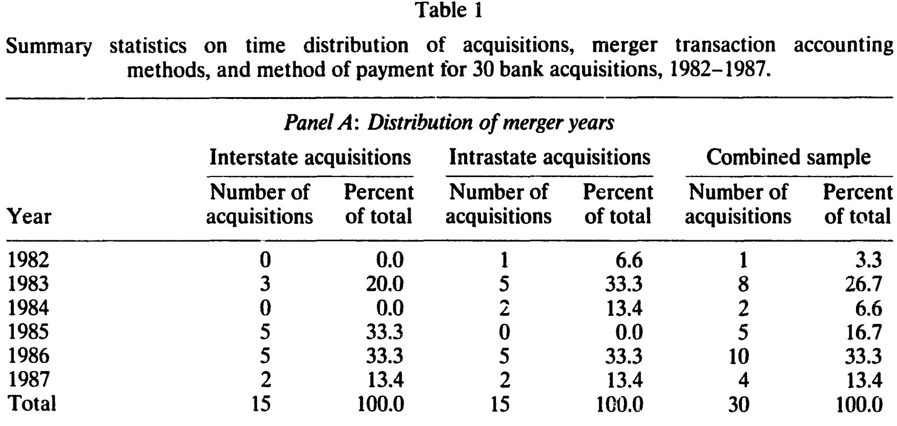
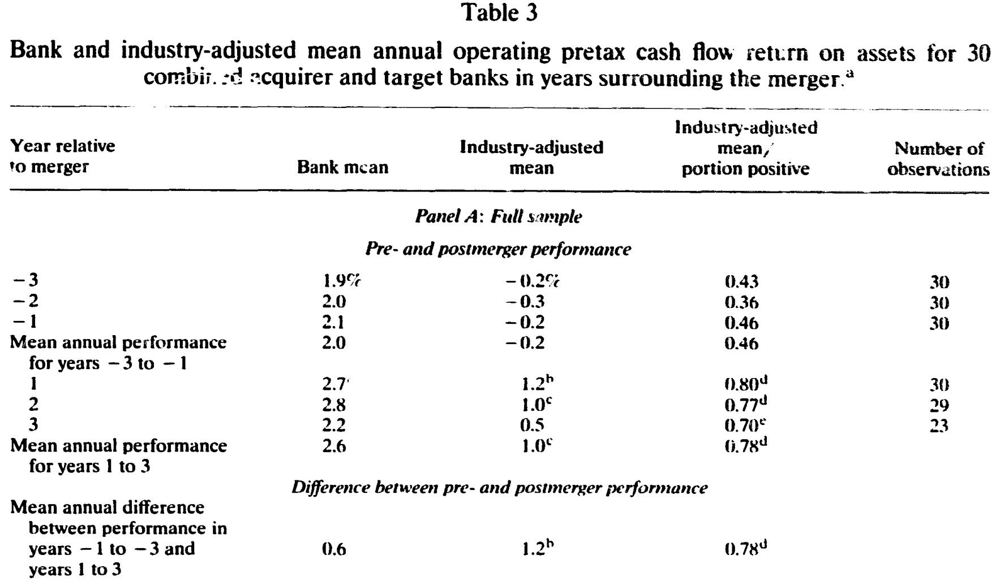
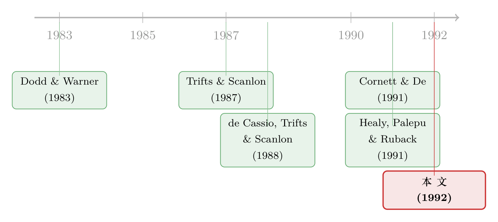

并购真能让银行变好吗？——一笔用「会计账本」算出来的合并红利
本文读的是 Cornett & Tehranian (1992, Journal of Financial Economics)：他们绕开「股价涨跌」，直接翻 30 家大型银行合并案的会计账本，发现合并后的银行经行业调整的现金流回报率从 -0.2% 升到 +1.0%（提升 1.2%，1% 显著）；而且公告日的超额收益与这份「真金白银」的绩效改善显著相关——市场在并购宣布的那一刻，就已经看见了后面会发生的好事。
1 一个老掉牙、却始终没答清的问题
并购到底创不创造价值？这几乎是公司金融里最被反复拷问的一个问题。难点在于：我们手里最趁手的工具是事件研究 (event study)——看公告那几天的股价反应。可股价的跳动同时混着两件完全不同的事。一件是「真的有协同效应、效率会改善」；另一件是「收购方本来就有内幕，知道目标被市场低估了，于是趁低吸纳」。后一种情形里，目标公司后来的业绩确实会变好，但这份好和合并本身没有半点因果关系——它本来就会发生。
换句话说，股价能告诉你「市场觉得这桩买卖好」，却没法告诉你「这桩买卖到底有没有带来真实的经济改善」。（关于并购收益究竟从哪儿来这个母题，可参见《并购到底创没创造价值？——把老板心里那本账翻给你看》。）
接着，一个自然的问题是：那就别只盯着股价，去看实打实的经营数据好了。这正是 Healy, Palepu, and Ruback (1991)（下称 HPR）开的路子——他们拿合并前后的现金流账本，去问「合并后公司的真实运营效率有没有提高」。但 HPR 有一个刻意的回避：他们故意把受监管的行业（regulated firms）剔除在外，银行首当其冲。
于是 Cornett 和 Tehranian 接过这把铲子，专挖那块被 HPR 留白的地方：银行。
2 为什么偏偏要挖银行这块地
挑银行不是图省事，恰恰相反——银行是最难处理的样本，但也最干净。
首先，1980 年代初通过的跨州银行法 (interstate banking laws) 是一场天然的制度变迁。1982 年银行才第一次被允许跨州收购外州银行，到 1985 年这类并购才真正多起来。这给了作者一个现成的对照：跨州 (interstate) vs. 同州 (intrastate) 两类并购，是不是有不同的经济逻辑？前人 de Cassio, Trifts, and Scanlon (1988) 看股价时就发现，同州并购给合并后的银行带来了正向协同，而跨州并购看不出明显收益。
然后，银行有一个非银公司没有的好处：报表高度标准化。所有银行都要向联邦存款保险公司 (FDIC) 报送 Report of Income 和 Report of Condition，数据可比、口径统一。这让「行业调整」这件事变得异常干净——你能找到一批同样大、同样公开交易的 NYSE/Amex 上市银行（样本期内这个指数里有 30 到 36 家银行）当基准，把宏观和行业的大势减掉。
但真正关键的一步在于口径的取舍。作者用的核心指标是：
$$ \text{operating cash flow return} = \frac{\text{operating cash flows}}{\text{market value of assets}} $$
其中分子 operating cash flows 定义为「折旧、商誉、长期负债利息和税收之前的盈余」，分母 market value of assets 是「普通股市值 + 长期负债与优先股账面值 − 现金」。为什么要这么绕？因为用经营现金流而不是会计利润，可以一举甩掉两个干扰项：合并的会计方法（购买法 purchase vs. 权益结合法 pooling）和融资方式（现金 vs. 换股）。购买法会推高折旧和商誉摊销、压低利润；现金或债务融资的并购，利润里又扣掉了利息——这些都和「公司到底有没有变能干」无关。现金流口径把它们统统过滤掉。
这里有一处作者和 HPR 的细微但要紧的分歧：HPR 把可交易证券 (marketable securities) 的收益和资产都剔出去，理由是让回报指标不受融资方式影响。可银行不一样——投资组合里持有大量可交易证券是银行的主业，把它们剔掉等于把银行的半条命剔掉。所以作者坚持把这部分投资收益算进经营现金流。
还有一个容易被忽略的技术细节：在算合并后的资产基数时，作者剔除了公告期目标与收购方的股权价值变动（从公告前五天算到目标退市）。逻辑是：有效市场会在公告当天就把「预期的效率改善」资本化进股价；如果你把这块升值算进资产分母，那么哪怕合并真的带来了更好的运营，税前回报率也会被「做平」，显示不出任何异常增长。
3 样本：把口子收得很窄，只为看得更清
我们先看样本是怎么搭起来的。作者从 Shearson Lehman Brothers 的《Bank Merger and Acquisition Study (1987)》里，原本识别出 1982 至 1987 年 10 月的 105 起跨州和 182 起同州并购。然后一刀刀往下削：
- 收购价必须超过 1 亿美元——大目标相对小收购方，协同收益最容易被识别出来，而且这些大案子占了并购总金额的大头；
- 剔除一个收购方在事件窗口里做了多笔 1 亿美元以上、或做了五笔以上（任意规模）并购的，以避免混淆事件 (confounding events)；
- 目标银行的普通股必须公开交易；
- 1982 年起步，是因为这是跨州并购的元年，也是 FDIC 数据（1979 年起编）能给出三年合并前数据的最早年份。
削到最后，正好是 15 起跨州 + 15 起同州 = 30 起。作者特意提醒：这个 15-15 的对称纯属巧合，并不是设计出来的——这 30 起就是满足条件的全部总体。
如表 1 所示，跨州并购明显集中在样本期的后三年（1985 年后才放量），购买法与权益结合法几乎对半开，半数交易完全用股票支付。

Table 1
值得一提的是：这 30 起全是自愿并购，没有任何一起是监管机构因目标银行经营失败而「撮合」的。30 个目标里只有 3 个在被收购时正在亏损。而且并购后，作者能查到信息的 23 个目标里，管理层无一例外地留任了。这是一群「健康银行收购健康银行」的样本——这一点对解读结果很重要。
4 主要结果：未调整时「看不出名堂」，一调整就「水落石出」
现在来看核心。这里藏着一个漂亮的反转。
如果你只看未经行业调整的银行均值，结论几乎是「啥也没发生」：30 家银行合并前三年的税前经营回报率在 1.9%–2.1% 之间，合并后三年在 2.2%–2.8% 之间；年均从 2.0% 升到 2.6%，差值 0.6%——不显著。
但真正关键的一步，是把行业大势减掉。作者说得很直白：这些回报率是用市值平减的，整个市场或银行业的任何趋势都会同时推高样本银行和基准银行的数字，所以未调整的「没变化」很可能是被行业共同因素掩盖了。
于是反转出现：经行业调整后，全样本银行合并前的平均回报率是 -0.2%（跑输行业），合并后变成 +1.0%（跑赢行业），提升 1.2%，在 0.01 水平上显著。为防止结论被个别异常值带偏，作者又算了「行业调整回报为正的比例」并做 Wilcoxon 符号秩检验：合并前为正的比例只有 36%–46%（都不显著），合并后跃升到 70%–80%，每年都在 5% 以上水平显著；整个样本里 78% 的银行回报改善，1% 水平显著。
如表 3 所示，这个「未调整看不出、调整后才显形」的对比，在跨州和同州两个子样本里同样成立：跨州并购行业调整回报改善 1.2%，同州改善 1.1%，两者都在 0.01 水平显著，而两者之差不显著。也就是说，无论跨不跨州，合并都带来了真实的现金流改善——这一点和前人只看股价时得出的「跨州无收益」形成了有意思的张力。

Table 3
那会不会是另一种「假象」？比如市场在公告时高估了并购收益，事后被迫下修，于是显得合并后业绩在「改善」？作者用事件研究堵死了这条路：样本的两年期公告后累计异常收益 (CAR) 只有 0.93%（Z = 0.29），与零无异。既然事后没有系统性的向下修正，那么观察到的改善就只能归因于真实的效率提升，而不是市场纠错。
5 改善从哪里来：不是省成本，而是「把生意做大」
接着，一个自然的问题是：这 1.2% 的现金流改善，到底是从哪个环节挤出来的？作者把银行绩效拆成七大类指标（盈利能力、资本充足、信贷质量、效率、流动性风险、增长、利率风险），逐一比对，结果相当出人意料——
改善几乎全部来自「扩张端」，而非「节流端」：
- 借贷能力：行业调整后的贷款/权益比 (loans-to-equity) 从合并前的
-2.00X升到合并后的0.22X，在 0.05 水平显著。这说明合并后的银行更充分地用足了自己的放贷能力。 - 揽存能力：存款/权益比 (deposits-to-equity) 相对行业提升了 4.4X，1% 水平显著——每一块钱权益能吸来更多存款。
- 资产增长与员工生产率也显著改善。
而那些「节流/稳健」类的指标基本没动：资本充足率（资本/资产）没有显著变化，信贷质量（charge-offs/loans 核销率）没变，流动性也没变。尤其重要的是资本结构没变——这就排除了「绩效改善是因为合并后银行偷偷加了杠杆」的解释。换句话说，合并后的银行是在资本充足率不变、贷款质量不变的前提下，把贷款和存款的规模相对行业做大了。
这是一个很「干净」的故事：合并红利不是来自裁员压成本，而是来自每一块权益资本能撬动更多优质生意。
6 市场看见了吗：公告日股价与「未来绩效」的对话
最后一块拼图，也是这篇论文最让我欣赏的地方。
公告日的标准事件研究结果是：目标银行两天异常收益 8.00%（Z = 20.4，1% 显著），符合既有文献；收购方 -0.80%（Z = -2.34，5% 显著），而且这个负收益主要来自同州收购方（-1.90%，Z = -3.42，1% 显著），跨州收购方则是 0.34%（不显著）。合并后两公司加总的市值调整收益为 2.09%（Z = 2.25，显著为正）。
但作者没有停在这里。他们把公告日的市值调整异常收益与前面那些会计绩效改善指标做了相关分析，发现两者显著正相关。这意味着：市场参与者在并购宣布的那一刻，就已经能提前识别出后面三年会兑现的运营改善。股价反应不是噪声，也不是事后才慢慢明白——它是对真实经济收益的理性预判。
这就把开头那个「股价 vs. 真实绩效」的两难，缝合上了：会计账本证明了改善是真的，事件研究又证明了市场看得见这个真的改善。
7 文献脉络
把这条线捋一捋。最早，并购研究的主流工具是事件研究：Dodd and Warner (1983) 奠定了标准的市场模型事件研究方法论，本文测算公告期异常收益时就直接沿用了它。在银行并购的具体战场上，Trifts and Scanlon (1987)、de Cassio, Trifts, and Scanlon (1988) 以及 Cornett and De (1991) 陆续用股价数据去问「银行合并有没有创造价值」，并发现跨州与同州的市场反应有所不同。

转折点是 Healy, Palepu, and Ruback (1991)：他们提出别只看股价、要看合并前后的真实经营现金流，用 50 家非银大型并购证明了行业调整后的运营回报确有显著改善——但他们有意把受监管的银行排除在外。本文 (Cornett & Tehranian, 1992) 正是把 HPR 的方法论移植到被它回避的银行业，并针对银行的特殊性（可交易证券、监管资本）调整了现金流口径，最终得到与 HPR 同向的结论。这条「从股价到现金流、从一般企业到受监管银行」的演进线，本文恰好站在交汇处。
关于银行并购收益的后续追问，可参见《把并购拆成两个维度：什么样的银行合并，才真的创造价值？》与《刚跨过「大到不能倒」那道线，债主就笑了》。
8 评论与延伸（Q&A + 研究方向）
(a) 几个可能的疑问
Q：未调整看不出、调整后才显著，这会不会是「调出来」的结果？
不太像。作者的逻辑是先验合理的：回报率用市值平减，行业和宏观趋势会同时推高样本和基准，所以未调整结果天然被共同因素稀释。而且行业调整后的稳健性检验（78% 的银行改善、Wilcoxon 检验、子样本一致）都指向同一方向，不是单一均值的偶然。当然，基准只有 30–36 家 NYSE/Amex 银行，基准本身的噪声是个隐忧。
Q：「合并改善了绩效」和「收购方早就知道目标被低估」这两种解释，本文真的分开了吗？
作者本人很诚实：没有完全分开。无论会计还是股价数据，都无法区分「目标本就被低估、改善本就会发生」与「合并因果地带来了改善」。这是这类研究的根本局限。本文能做的，是排除「市场高估后下修」这一条（靠两年期 CAR 不显著），但「信息优势型收购」仍无法证伪。
Q：管理层全部留任，这对结论意味着什么？
这恰恰让「裁员省成本」的解释更站不住脚——绩效改善发生在管理层不变、信贷质量不变、资本结构不变的前提下，全靠扩大贷款和存款规模。这是个「做大蛋糕」而非「切薄成本」的故事，但也提醒我们：样本是「健康收健康」的自愿大并购，结论未必能外推到困境救助型并购。
Q：跨州和同州都改善，可前人看股价说跨州没收益，到底谁对？
两者并不矛盾。股价反映的是「收益如何在收购方与目标间分配」以及市场预期，而会计现金流反映的是「合并实体整体的运营改善」。本文发现同州收购方公告收益为负（-1.90%）、跨州不显著，但合并后整体的现金流改善两类几乎相同。这说明协同收益存在，只是收购方股东未必分到。
Q：1 亿美元门槛会不会让结论只适用于大并购？
会。作者明说限定大案子是为了「收益最容易被识别」，且大案占并购总金额的大头。但这也意味着结论是关于大型银行合并的，对中小银行合并是否成立未知。这是外部效度的代价，换来的是内部识别的清晰。
Q：为什么坚持把可交易证券算进现金流，而 HPR 要剔除？
因为对象不同。HPR 面对非银企业，剔除可交易证券是为了让回报不受融资方式影响；而银行持有证券是主业，文中还指出这些投资证券并未被用来融资并购，所以纳入它们不会造成合并前后的口径不一致。这是「让指标贴合行业经济实质」的合理取舍。
(b) 几个可能的研究问题与提案
1. 银行并购对债权人与公司债利差的影响
【经济故事】本文证明合并后银行扩大了贷款和存款规模、资本充足率不变。那么债权人——尤其是银行发行的次级债持有人——是受益还是受损？规模变大可能带来「大而不能倒」的隐性担保，压低利差。
【可行性】中。需要 TRACE 或更早的银行债成交数据匹配并购事件，识别可用并购公告做事件研究。难点是早期银行债流动性差、成交稀疏。可与《刚跨过「大到不能倒」那道线，债主就笑了》的思路衔接。
2. 把「行业调整」换成更现代的匹配估计量重做一遍
【经济故事】本文的行业基准只是 30–36 家上市银行均值，今天我们有更细的匹配方法（按规模、业务结构、地区做倾向得分匹配）。用现代方法重估这 30 起（或扩展到更大样本），能检验那 1.2% 是否稳健。
【可行性】高。FDIC 报表数据公开可得，事件清单可复现。识别仍受「信息优势型收购」困扰，但可加入「目标合并前是否被分析师覆盖、是否有内部人交易」做异质性检验。
3. 跨州放开作为银行竞争的准自然实验
【经济故事】1982 年起的跨州银行法是分州分批推进的。可以用各州放开时点的交错差异，做交错双重差分 (staggered DiD)，识别竞争加剧对在地银行合并倾向与合并后绩效的因果影响。
【可行性】高。各州立法时点有据可查，FDIC 数据覆盖全行业。需注意近年对交错 DiD 的方法论批评（处理效应异质性），应采用稳健估计量。
4. 外资银行进入与本土银行合并红利的互动
【经济故事】本文的合并红利来自「揽存揽贷能力」的提升。若市场上有外资银行进入，本土银行的存贷扩张是否会被挤压，从而削弱合并红利？这把银行并购与外资持有人两条线接上了。
【可行性】中。需要跨国银行业数据与外资进入的可识别冲击；美国 1980 年代外资银行进入数据较稀疏，可能要转向有更清晰外资开放节点的新兴市场。
参考文献
- Cornett, M. M., & Tehranian, H. (1992). Changes in corporate performance associated with bank acquisitions. Journal of Financial Economics 31(2), 211–234.
- de Cassio, G., Trifts, J. W., & Scanlon, K. P. (1988). Bank equity returns: The difference between intrastate and interstate bank mergers.
- Dodd, P., & Warner, J. B. (1983). On corporate governance: A study of proxy contests. Journal of Financial Economics 11(1–4), 401–438.
- Gardner, M. J., & Mills, D. L. (1988). Managing Financial Institutions: An Asset/Liability Approach. Dryden Press.
- Healy, P. M., Palepu, K. G., & Ruback, R. S. (1991). Does corporate performance improve after mergers? Journal of Financial Economics 31(2), 135–175.
- Trifts, J. W., & Scanlon, K. P. (1987). Interstate bank mergers: The early evidence. Journal of Financial Research 10(4), 305–311.